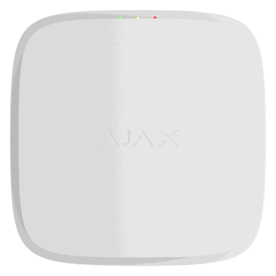

FireProtect 2 AC (CO) Jeweller
Détecteurs d'incendie
Réf. fabricant FP2.ACC.J · Ajax Systems, marque partenaire
Sur devisÉtude, fourniture et installation par Active Sécurité 974
Détecteur d'incendie sans fil de monoxyde de carbone alimenté par le secteur
En savoir plus
- Communication : sans fil
Autres versions officielles de la même famille (optique, format, Jeweller ou Fibra, alimentation). Le coloris choisi est repris sur la fiche suivante.
Ajax place ce détecteur dans Residence Line, sur la page SSI. Il peut compléter une alarme Baseline. Voir Residence Line.
- Étude et devis gratuits, sans engagement
- Installation chez vous, partout à La Réunion
- Partenaire agréé Ajax Systems
Caractéristiques
En bref.
Source : Ajax Systems
| Modèle | FireProtect 2 AC (CO) Jeweller |
|---|---|
| Référence fabricant | FP2.ACC.J |
| Gamme | Residence Line |
| Type | Détecteurs d'incendie |
| Points clés |
|
| Coloris officiels | Noir, Blanc |
| Prix | Sur devis |
| Disponibilité | Précisée dans le devis |
Dans la même famille
Autres produits.
